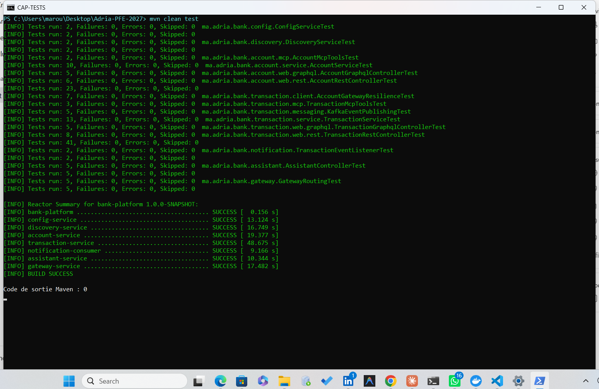
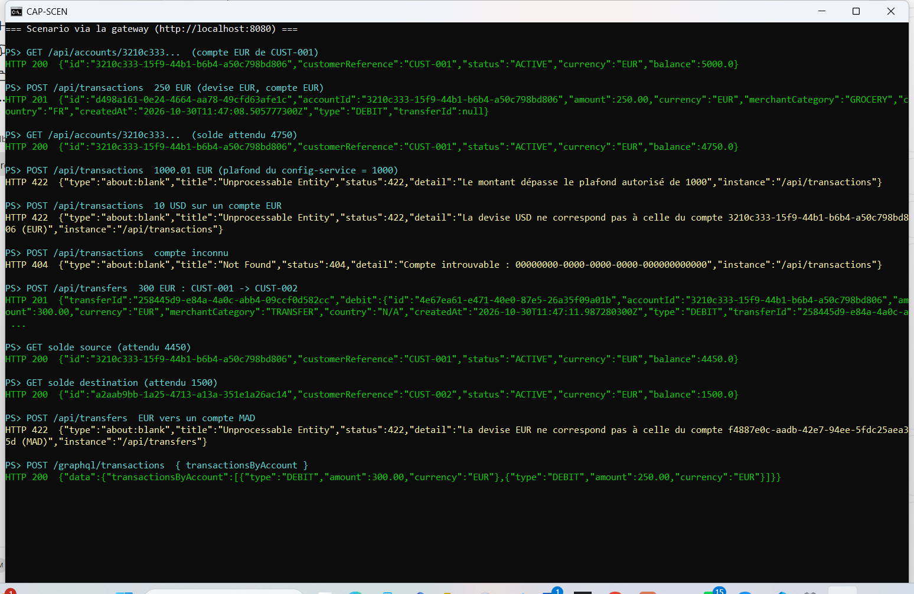
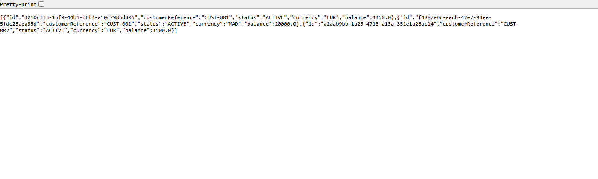
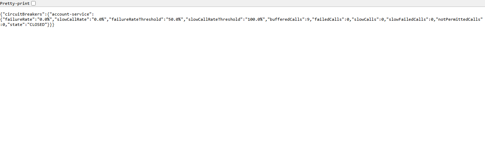
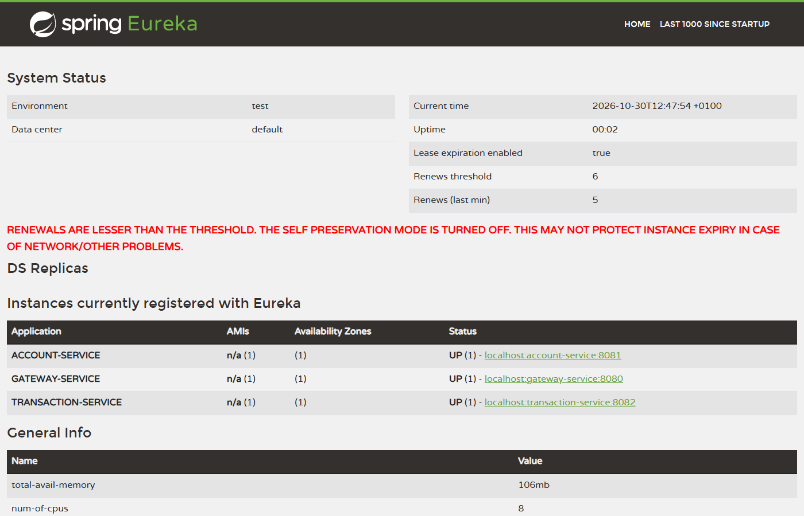
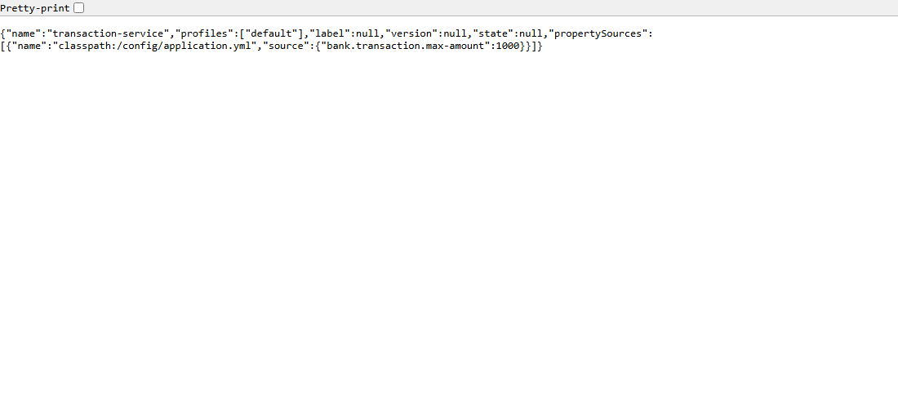

| Candidate | Maroua EL BARNAOUI |
| Dépôt | github.com/Maroua-EL-BARNAOUI/elbarnaoui-maroua-test-adria-pfe-27 |
| Sujet | Architecture micro-services, IA et développement full-stack (plateforme bancaire) |
pom.xml parent, un module par micro-service) : Java 21, Spring Boot 3.5, Spring Cloud 2025.0, Spring AI 1.0.| Module | Port | Rôle |
|---|---|---|
| config-service | 8888 | Spring Cloud Config (bank.transaction.max-amount=1000) |
| discovery-service | 8761 | Eureka |
| account-service | 8081 | Comptes : REST, GraphQL, MCP |
| transaction-service | 8082 | Transactions et virements : REST, GraphQL, MCP, Feign, Resilience4j, producer Kafka |
| notification-consumer | 8084 | Consumer Kafka (journalisation) |
| assistant-service | 8083 | Agent IA (Spring AI, Ollama, client MCP) |
| gateway-service | 8080 | Spring Cloud Gateway |
/api/**, /graphql/*bank.transactions.createdFlux : client → gateway → services (résolus via Eureka). transaction-service appelle account-service par OpenFeign + Resilience4j, publie dans Kafka (clé = accountId) après le commit ;
notification-consumer lit le topic. L'assistant se connecte aux serveurs MCP des deux services métier et au LLM local.
Légende. Jaune : connecteurs (REST, GraphQL, MCP) ; vert : couche service ; bleu : domaine et repository ; violet : appel inter-services (OpenFeign + Resilience4j) ; rouge : évènements Kafka. Flèche pleine : utilise ; pointillée : dépend de / appelle à distance. Tous les connecteurs appellent la même couche service. Par rapport au modèle minimal du sujet, Transaction porte en plus type et transferId (virement).
Les contrôleurs REST, GraphQL et MCP appellent la même couche service (exigence du sujet). Un virement produit une transaction DEBIT et une transaction CREDIT reliées par un transferId.
Les diagrammes Mermaid sources sont dans docs/architecture.md.
$ mvn clean verify [INFO] bank-platform ...................... SUCCESS [INFO] config-service ..................... SUCCESS Tests run: 2, Failures: 0, Errors: 0 [INFO] discovery-service .................. SUCCESS Tests run: 2, Failures: 0, Errors: 0 [INFO] account-service .................... SUCCESS Tests run: 23, Failures: 0, Errors: 0 [INFO] transaction-service ................ SUCCESS Tests run: 41, Failures: 0, Errors: 0 [INFO] notification-consumer .............. SUCCESS Tests run: 2, Failures: 0, Errors: 0 [INFO] assistant-service .................. SUCCESS Tests run: 5, Failures: 0, Errors: 0 [INFO] gateway-service .................... SUCCESS Tests run: 5, Failures: 0, Errors: 0 [INFO] BUILD SUCCESS Total : 80 tests, 0 échec
Sortie texte de l'exécution complète (80 tests).

Capture d'écran : mvn clean test exécuté dans un terminal, résumé des tests par classe et BUILD SUCCESS.
Détail pour account-service (23) : service 10, REST 6, GraphQL 5, MCP 2. transaction-service (41) : service 13 (règles, virement, compensation), REST 8, GraphQL 5, MCP 3, résilience 7 (vrai client Feign contre un faux account-service HTTP : 404/409 sans retry, 500 réessayé puis 503, circuit ouvert sans appel réseau), Kafka 5.
POST /api/transactions 250 EUR sur le compte EUR de CUST-001 -> 201 (solde 5000 -> 4750)
POST /api/transactions 1000.01 EUR -> 422 "Le montant dépasse le plafond autorisé de 1000"
POST /api/transactions devise USD sur un compte EUR -> 422 "La devise USD ne correspond pas à celle du compte ... (EUR)"
POST /api/transactions compte inconnu -> 404 "Compte introuvable : 0000..."
POST /api/transfers 300 EUR de CUST-001 vers CUST-002 -> 201 (soldes 4450 et 1500)
POST /api/transfers EUR vers un compte MAD -> 422 "La devise EUR ne correspond pas ... (MAD)"
POST /graphql/transactions { transactionsByAccount(...) { type amount } }
-> {"data":{"transactionsByAccount":[{"type":"CREDIT","amount":300.00}]}}
Sortie texte des requêtes, services lancés ensemble (config, Eureka, account, transaction, gateway).

Capture d'écran : le même scénario rejoué dans un terminal (HTTP 201 / 422 / 404, soldes 5000 → 4750 → 4450, virement, GraphQL).

Capture d'écran (navigateur) : http://localhost:8080/api/accounts, la gateway route vers account-service.
account-service arrêté : appel 1 -> HTTP 503 en 864ms (3 tentatives) appel 2 -> HTTP 503 en 544ms appel 3 -> HTTP 503 en 73ms (circuit OPEN : échec immédiat) appel 4 -> HTTP 503 en 90ms GET /actuator/circuitbreakers -> "state":"OPEN","notPermittedCalls":5 account-service redémarré, après 10 s (demi-ouverture) : 3 transactions -> HTTP 201, état du circuit : CLOSED, solde 5000 - 3x100 = 4700
Sortie texte de l'exécution réelle. Un défaut a été trouvé et corrigé pendant ces tests : le retry insistait sur un circuit ouvert (~520 ms par appel).

Capture d'écran (navigateur) : /actuator/circuitbreakers de transaction-service, circuit CLOSED en fonctionnement normal (9 appels, 0 échec).
/api/accounts/**, /api/transactions/**, /api/transfers/**, /graphql/accounts et /graphql/transactions (préfixe retiré, car les deux services exposent /graphql).bank.transaction.max-amount=1000 est servi à tous les clients. transaction-service n'a aucune valeur locale ; sans config-service, il refuse de démarrer.GET http://localhost:8888/transaction-service-default.yml
bank:
transaction:
max-amount: 1000
transaction-service lancé sans config-service :
APPLICATION FAILED TO START
Binding to target ...BankTransactionProperties failed:
Property: bank.transaction.maxAmount Reason: must not be null
Sortie texte. Au démarrage, la gateway répond 503 environ 30 s (propagation du registre Eureka), puis 200.

Capture d'écran (navigateur) : tableau de bord Eureka, ACCOUNT-SERVICE, GATEWAY-SERVICE et TRANSACTION-SERVICE enregistrés et UP.

Capture d'écran (navigateur) : http://localhost:8888/transaction-service/default, le config-service sert bank.transaction.max-amount: 1000.
Agent Spring AI (ChatClient) avec un prompt système bancaire (ne jamais inventer un solde, confirmer avant tout paiement ou virement), une mémoire de conversation,
et les outils MCP des deux micro-services (client MCP en SSE). LLM : Ollama, modèle llama3.2:3b en local (aucune clé d'API). Test via client REST : POST /api/assistant/chat.
POST http://localhost:8083/api/assistant/chat
{"message":"Quels sont les comptes du client CUST-001 et leur solde ?"}
-> {"conversationId":"53cbf082-...","reply":"Le client CUST-001 a deux comptes :
1. Un compte en euros (EUR) avec un solde de 5 000,00 €.
2. Un compte en dirhams (MAD) avec un solde de 20 000,00 MAD."} (60 s sur CPU)
Sortie réelle : ces soldes proviennent d'account-service via MCP. Tests automatisés de l'assistant (modèle simulé) : 5 tests (prompt système, mémoire par conversation, validation, erreur 503). Limite : les clients Telegram et Discord n'ont pas été développés ; seul le client REST a été utilisé. Un petit modèle (3 milliards de paramètres) reste moins fiable qu'un grand modèle pour choisir les outils ; un seul scénario de lecture a été validé en réel.
TransactionCreated dans bank.transactions.created, clé = accountId (un virement publie un évènement par jambe).Message lu dans le topic (kafka-console-consumer, broker Docker réel), clé puis valeur :
b3f87ecf-3cd0-4a92-a0ab-26e897cdc89f
{"eventId":"0e16fe30-b8d2-4fbc-919e-4462aa8d6005","eventType":"TransactionCreated",
"transactionId":"d8b7963a-c5eb-498c-9580-82d6484d3e2f","accountId":"b3f87ecf-3cd0-4a92-a0ab-26e897cdc89f",
"amount":250.00,"currency":"EUR","occurredAt":"2026-10-30T11:05:12.157452600Z"}
Log du consumer :
Évènement reçu : eventId=0e16fe30-... eventType=TransactionCreated transactionId=d8b7963a-... accountId=b3f87ecf-...
amount=250.00 currency=EUR occurredAt=2026-10-30T11:05:12.157452600Z [clé=b3f87ecf-... partition=1 offset=0]
Sortie réelle. Tests : 5 tests du producer (Kafka embarqué : format exact, clé, ordre par compte, rien publié en cas d'annulation) et 2 du consumer. Deux défauts trouvés et corrigés grâce aux tests : dates sérialisées en nombres au lieu d'ISO-8601 ; consumer qui ne voyait pas les partitions ajoutées après son démarrage. Limite : pas d'outbox, un évènement est perdu si Kafka tombe juste après le commit (journalisé ; une transaction reste acceptée si Kafka est arrêté).
bank_transactions.csv n'était pas fourni au format CSV : le fichier reçu est un PDF (bank_transactions.pdf),
et le convertisseur fraud-detection/pdf_to_csv.py n'a pas pu être testé non plus.fraud-detection/)fraud_detection.py : chargement, proportion de fraudes et valeurs manquantes, séparation entraînement/test stratifiée, exclusion de transaction_id et account_id,
pipeline scikit-learn (imputation, one-hot des catégories, normalisation) ajusté sur l'entraînement uniquement, régression logistique et random forest avec class_weight,
évaluation sur le test (précision et rappel de la classe fraude, F1, matrice de confusion, average precision) avec le seuil 0,5 fixé a priori (le test ne sert ni à entraîner ni à choisir le seuil).pdf_to_csv.py (conversion du PDF en CSV), generate_dataset.py (jeu synthétique de secours), requirements.txt.1. Pourquoi l'accuracy seule est-elle insuffisante ? Les classes sont déséquilibrées : si 1 % des transactions sont frauduleuses, un modèle qui répond toujours « légitime » obtient 99 % d'accuracy sans détecter aucune fraude. Il faut regarder la précision et le rappel de la classe fraude, le F1 et l'average precision, qui ne sont pas dominés par la classe majoritaire.
2. Compromis entre faux positifs et fraudes non détectées ? Un faux positif bloque ou alerte à tort un client légitime (coût commercial, charge d'analystes, perte de confiance). Une fraude non détectée (faux négatif) coûte directement le montant fraudé. Améliorer le rappel (moins de fraudes manquées) augmente en général les faux positifs, donc diminue la précision : le bon équilibre dépend des coûts respectifs.
3. Effet d'une diminution du seuil de décision ? Le modèle déclare « fraude » plus facilement : le rappel augmente (plus de fraudes détectées) mais la précision baisse (plus de faux positifs) et le volume d'alertes à traiter augmente. Le seuil doit se choisir sur un jeu de validation (jamais sur le test) selon le coût des deux types d'erreur.
4. Pourquoi une validation temporelle sur des données bancaires réelles ? En production, le modèle prédit l'avenir à partir du passé. Un découpage aléatoire mélange des périodes et fait fuiter de l'information future (comportements, motifs de fraude qui évoluent, variables historiques calculées après coup), ce qui donne des scores trop optimistes. Entraîner sur le passé et tester sur une période postérieure reproduit les conditions réelles, y compris la dérive des fraudes dans le temps.
MODULE (build multi-étapes Maven puis JRE, utilisateur non-root).depends_on sur la santé (readiness). Syntaxe validée par docker compose config ; les images n'ont pas été construites ni l'ensemble lancé via Docker Compose dans le temps imparti (seul le conteneur Kafka a été exécuté en réel)..github/workflows/ci-cd.yml) : compilation + tests (Java et Python), construction des images, publication dans GHCR, étape de déploiement schématique. Non exécuté.Secrets et configuration. La configuration (plafond, URLs, ports) varie selon l'environnement et se versionne (config-service, variables d'environnement). Un secret (mot de passe, clé d'API, secret client) donne un accès : jamais dans le dépôt ni dans l'image, injecté à l'exécution par un gestionnaire (GitHub Secrets, secrets Docker/Kubernetes, Vault), rotation possible.
Démarrage, disponibilité, vitalité. Actuator expose /actuator/health/liveness (le processus vit, sinon redémarrage) et /readiness (prêt à recevoir du trafic, sinon retiré de l'équilibrage) ; une sonde de démarrage laisse du temps aux démarrages lents (start_period dans compose). depends_on: service_healthy impose l'ordre config, Eureka, métier, gateway.
Logs, métriques, traces. Logs JSON avec identifiant de corrélation (Loki/ELK) ; métriques Micrometer/Prometheus et Grafana (latence, erreurs, état des circuit breakers, retard du consumer) ; traces distribuées OpenTelemetry vers Tempo/Zipkin, le traceId traversant gateway, Feign et les en-têtes Kafka.
Rollback. Images taguées par SHA de commit (immuables) : on redéploie le tag précédent ; déploiement progressif arrêté automatiquement si les sondes ou le taux d'erreur se dégradent ; migrations de base rétro-compatibles ; évènements Kafka compatibles (champs ajoutés seulement).